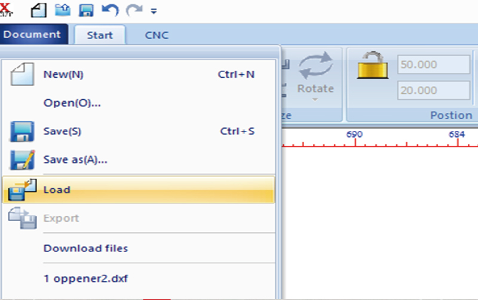

All content © 2016 Eduardo Chamorro (except where otherwise noted) Some rights reserved.
All content © 2016 Eduardo Chamorro (except where otherwise noted) Some rights reserved.Licensed under a Creative Commons Attribution-NonCommercial-ShareAlike 3.0 Unported License
Open X-CUT program, it only accepts DXF files,so save your design in this format in advance
X-cut 프로그램을 실행시켜 미리 저장한 dxf.파일을 불러온다.[Document-Load]

Set the layers by color and details on the design.(Speed, power,cut,scan,etc)
디자인의 세부사항과 레이어를 설정한다.(속도, 파워, 컷, 인그레이빙 등)
Send the design to the lasercutter. (write a name or overwrite default one)[Document-Download file-Download-ok]
디자인을 레이저커터로 전송한다.[Document-Download file-Download-ok]
After you verify that the air compressor is turned on, introduce your material on the lasercutter bed.
하단의 공기압을 확인 한 후 레이저커터 안에 재료를 넣는다.
Adjust the distance between the laser and the materials. Adjust with the z+ z- buttons and use the spacer hangin in the emergency button to set the exact space(be carefull while moving the height of the laser)
레이저 수평바를 사용하여 레이저와 재료 사이의 거리를 Z로 조절한다.*거리 측정 시 수평바가 꽉 끼지 않도록 조절한다.
Adjust the position of the laser on the control panel CTRL
Ctrl에서 레이저의 위치를 조정한다.
Locate the laser on the apropiate place on your material and press FIXED to setup the start point.
Fixed로 레이저 시작점을 고정시킨다.
Use the button FRAME to see the location and size of the design work on the workpiece.Check that your design fits inside
Frame으로 가공소재 위에 작업한 디자인의 위치와 크기가 적절한지 확인한다.
After checking the air pressure with Test Run you can Start.
Test로 공기를 체크한 후 Start로 실행한다.
When the cut has finish wait until the smoke is taked out by the fumee extractor and clean the lasercutter bed.
작업이 끝나고 연기가 배출된 후에 완성품을 꺼낸다. 작업대 주변을 깔끔히 정리한다.
All content © 2016 Eduardo Chamorro (except where otherwise noted) Some rights reserved.